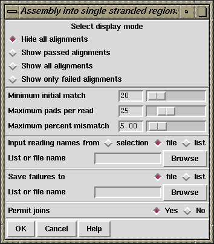

This mode works like normal assembly (see section Normal Shotgun Assembly) with masking, except that the masking is done for regions that already have sufficient data on both strands of the sequence. This means that new readings will only be assembled into regions that are single stranded or which border, and overlap, such segments. Note that this means that readings that do not match are not entered, therefore those that would actually lie between contigs are rejected.

The "display mode" dialogue allows the type of output produced to be set. "Hide all alignments" means that only the briefest amount of output will be produced. "Show passed alignments" means that only alignments that fall inside the entry criteria will be displayed. "Show all alignments" means that all alignments, including those that fail the entry criteria, are displayed. "Show only failed alignments" displays alignments only for the readings that fail the entry criteria.
When comparing each reading the program looks first for a "Minimum initial match", and for each such matching region found it will produce an alignment. If the "Maximum pads per read" and the "Maximum percent mismatch" are not exceeded the reading will be entered. The maximum pads can be inserted in both the reading and the consensus. If users agree we would prefer to swap the maximum pads criteria for a minimum overlap. i.e. only overlaps of some minimum length would be accepted.
Assembly usually works on sets of reading names and they can be read from either a "file" or a "list" and an appropriate browser is available to enable users to choose the name of the file or list. If just a single reading is to be assembled choose "single" and enter the filename instead of the file or list of filenames.
The routine writes the names of all the readings that are not entered to a "file" or a "list" and an appropriate browser is available to enable users to choose the name of the file or list. Occasionally it might be convenient to forbid joins between contigs to be made if a new reading overlaps them both, but the default is to "Permit joins".
Pressing the "OK" button will start the assembly process.
Note that this option may require the parameter maxseq to be set beforehand (see section Set Maxseq). This parameter defines the maximum length of consensus that can be created.